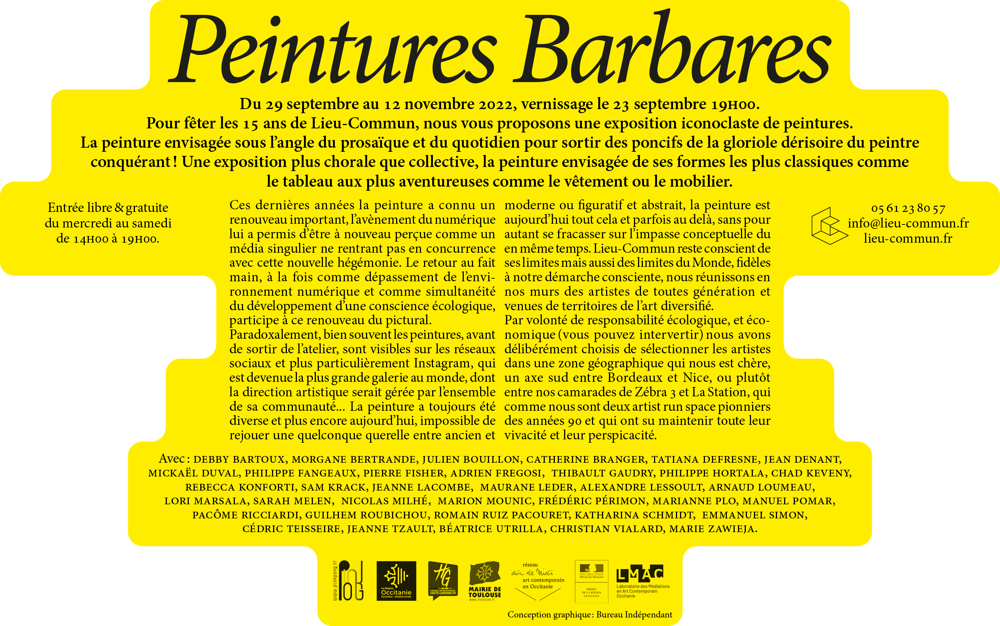

Conception de l’identité visuelle de l’exposition « Peintures Barbares » à Lieu-Commun, artist run space situé dans le faubourg bonnefoy à Toulouse. Projet réalisé avec Guillaume au sein du duo Bureau indépendant.
Commanditaire : Lieu-Commun artist run space
Année : 2022
EN/
Commanditaire :
Year :